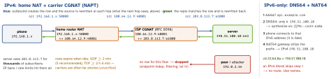

networking · folio
In one line: IPv4 ran out, so a phone sits behind NAT — often two (home router + carrier CGNAT) — which rewrites the private source IP:port to a shared public one and keeps a mapping table. Only outbound packets create rows, so nobody can dial in: P2P breaks, yet it is not a firewall. IPv6 gives every device global addresses (no NAT); IPv6-only carriers reach IPv4 servers via NAT64/DNS64.
Download PDF Print view LaTeX source


IPv4 and NAT
- 32 bits ≈ 4.3 bn addresses. IANA handed out its last
/8s on 3 Feb 2011; APNIC hit its final/8in Apr 2011, ARIN ran dry Sep 2015, RIPE NCC Nov 2019. NAT (really NAPT, port translation) lets a whole LAN share one address. - Not routed on the internet: RFC 1918
10/8,172.16/12,192.168/16; CGNAT shared space100.64/10(RFC 6598); link-local169.254/16. Docs/examples:192.0.2/24,198.51.100/24,203.0.113/24(RFC 5737). - Outbound packet → NAT allocates public IP:port, stores the 5-tuple mapping, rewrites the source (and checksums). The reply matches the row and is rewritten back. No row → dropped. Idle rows expire (RFC 4787: UDP ≥ 2 min, 5 min recommended; RFC 5382: TCP established ≥ 2 h 4 min) — long-lived sockets need keep-alives.
- CGNAT on mobile: one public IP for many customers → per-IP rate limits and bans are collateral damage; abuse reports need IP + port + time; no port forwarding.
NAT behaviour — who may use a mapping
| RFC 3489 | RFC 4787: mapping · filtering | hole punch? |
|---|---|---|
| full cone | endpoint-indep. · endpoint-indep. | yes, easy |
| restricted | endpoint-indep. · address-dep. | yes |
| port-restr. | endpoint-indep. · address+port-dep. | yes (simultaneous) |
| symmetric | address(+port)-dep. · a+p-dep. | no → TURN |
Mapping = does the public port stay the same for every destination? Filtering = who may send in on it. STUN only helps when the mapping is endpoint-independent: the port the STUN server saw is the port the peer can use. Symmetric NAT gives the peer a different port → relay. Hairpinning: two devices behind the same NAT reaching each other via the public address.
Why NAT is not a firewall — and asking it for a hole
Dropping unknown inbound is a side effect of having no row. Endpoint-independent filtering lets any host use an open mapping; nothing inspects outbound. IPv6 has no NAT, so the router needs a real stateful firewall (allow established, deny new inbound). Port mapping: static forwarding · UPnP IGD (unauthenticated) · NAT-PMP (RFC 6886) → PCP (RFC 6887) — none reaches through a carrier CGNAT.
Example — what an app must do
// BAD: IPv4 literal - no AAAA to synthesise on NAT64
let bad = URL(string: "http://198.51.100.10/v1")!
// GOOD: a name; DNS64 gives 64:ff9b::c633:640a
let good = URL(string: "https://api.example.com/v1")!
let mon = NWPathMonitor() // Network.framework
mon.pathUpdateHandler = { p in
print(p.supportsIPv4, p.supportsIPv6) // IPv6-only: false, true
}
mon.start(queue: .main)
// test: macOS Internet Sharing -> "Create NAT64 Network"
// server: store IPs as 16 bytes; rate-limit per /64IPv6
- 128 bits; a LAN gets a
/64: 64-bit prefix + 64-bit interface ID. No broadcast, no ARP (NDP/ICMPv6 instead — don’t block ICMPv6). - Every interface has several addresses: link-local
fe80::/10(always, never routed; needs a zone%en0) · ULAfc00::/7(private, “RFC 1918 for v6”) · global2000::/3. Docs:2001:db8::/32. - SLAAC (RFC 4862): the router advertises the prefix (RA), the host builds its own address; DHCPv6 is optional. Temporary (privacy) addresses (RFC 8981) rotate the interface ID — outbound connections use them, so an IP is not a device ID.
- Dual stack: both families. Happy Eyeballs v2 (RFC 8305): resolve A + AAAA, try IPv6 first, start the next attempt after 250 ms (50 ms resolution delay), keep the winner. URLSession / Network.framework race for you(unverified); a raw
connect()to the first address does not. - IPv6-only + NAT64 (RFC 6146) with DNS64 (RFC 6147) and the well-known prefix
64:ff9b::/96(RFC 6052) — many mobile carriers. 464XLAT (RFC 6877): an on-device CLAT gives IPv4-literal apps a fake IPv4 path. Since 1 June 2016 every App Store app must work on IPv6-only networks; Apple says: no IP literals, usegetaddrinfo/ URLSession.
Traps
- “NAT is security” — filtering is accidental; IPv6 security = the stateful firewall.
- “Two phones can just connect” — both behind NAT/CGNAT: neither can accept; STUN + hole punching, else TURN (symmetric NAT, UDP blocked).
- Idle TCP socket silently dead after minutes on cellular — the NAT row expired, no RST. Heartbeat below the timeout, or reconnect.
- Banning an IP on mobile = banning a neighbourhood (CGNAT).
- Hard-coded IPv4 literal / IPv4-only socket code = rejected by App Review on NAT64.